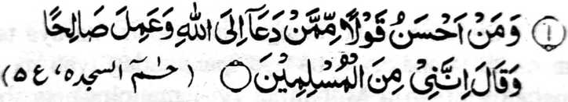
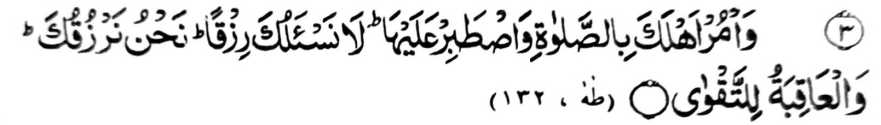
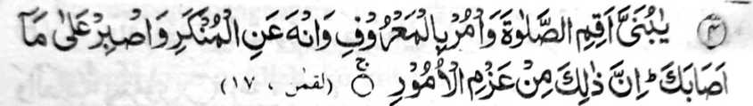
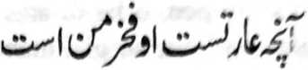
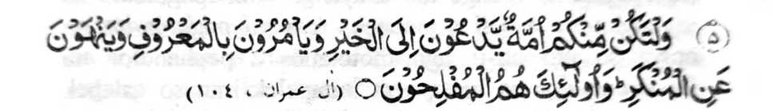
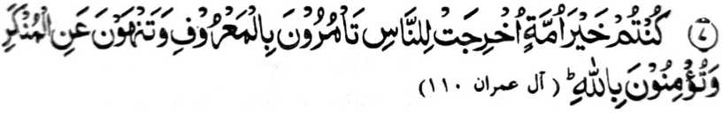
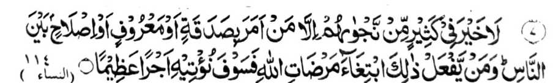

Paganay ron, na kabaya aken a kaaloya ko ko saba-ad ko manga Ayaat sa Qur'an pantag ko Tabligh. Misabap sangka-iya a manga Ayaat a kakha-ilaya on o manga pembatiya si-i ay taman a kala-i bali ko Allah ko gi-i kipanolonen ko Islam. Manga nem polo a Ayaat ko Qur’an a miyabatiya aken makapantag sangka-iya a osayan, na so bo so Allah na aya lebi a mata-o o pira timan pen a Ayaat a kha-inengka o mapasang a pababatiya. Pagalowin aken si-i so saba-ad kiran (a manga Ayaat) para ko kamapiya-an o omani titho a miyaratiyaya.

"Na ba aden a tao a makalebi a mapiya-i katharo ko tao a ini panolon niyan so (kaonoti ko) Allah., go minggalebek sa mapiya, go pitharo iyan a: ‘Mata-an! A saken na ped ko Mimbabayorantang (ko Allah)." [Surah Fussilat:33]
Aden a manga pananapsir a pitharo iran a saden sa pendolonen niran so manga tao si-i ko Allah ko apiya antona-a okit na miyapatot rekaniyan angkanan a bantogan a miya-aloy sangkanan a Ayaat. Ibarat, na so manga Nabi a pendolonen niran so manga tao mokit ko manga piyakamemesa a gi-i manggola-ola (Mo’jizat), so manga Olama na pendolonen niran siran mokit ko manga dalil (pho-on ko Qur'an ago so Sunnah), so manga Mujahideen na pendolonen niran siran mokit ko pedang, go so manga Pag-e-bang (Muazzin) na pethalowan niran siran mokit ko bang. Aya katimbel iyan, na saden sa pendolonen niyan so manga tao ko manga pipiya a Amaal na miyapatot rekaniyan angka-iya balas, melagid o aya ipendolon niyan kiran na so manga paliyogat o Agama o di na so kasotiya ko masolen (poso), lagid o manga Auliya a tanto iran a bigan sa mala a panamar so kasoti o poso ago so kakenala ko manga sipat o Allah.
Si-i ko kaposan angkanan a Ayaat, na so saba-ad ko manga pananapsir na pitharo iran a paliyogat sangkoto a tao a kipangandagen niyan ko bantogan a inibegay ron o Allah, ko kiyabaloy niyan a Muslim, sa maphakarayag iyan a nggolalan ko katharo.
So saba-ad ko manga pananapsir na aya tapsir iran na di khapakay o ba aya ipangandag iyan na giya kababaloy niyan a Muballigh (gi-i manolon), sa ibetad iyan a ginawa niyan sa matag kalilid a Muslim.
"Na pangethoma ka, ka mata-an a so thoma na phakanggay a gona ko Miyamaratiyaya" [Surah Adh-Dhariyaat.55]
So manga pananapsir na pitharo iran a so kapanolon na aya ma-ana niyan na so kapangenda-owa ko Miyamaratiyaya a nggolalan ko manga Ayaat ko Qur’an, sabap sa giya-i makapenggonana-o kiran ko Lalan a Ontol. Ogaid na giyangkanan a panolon na khamapiya-an non pen so manga kafir, sabap sa khapakay a mabaloy siran mambo a Miyamaratiyaya. Hay tanto a piyakarata-rata sa ginawa! Imanto a masa na so, kapanolon na mindadarainon ago di maka-oontol ko okit iyan. Aya den a kalilid na aya antap o gi-i mamanolon na giya kapephaki-ilain niran ko manga pephamamakineg ko kapasang iran ago so kapiya-irani kasambong sa lalag, a badi katharo o Nabi (Sallallaho Alaihi Wasallam) a:
“Saden sa tao a maganad sa katharo sa lalag ka aniyan magawi so manga tao si-i rekaniyan, na so manga simba niyan, melagid o paralo antawa-a Nafl, na diden khatarima ko Gawi-i a Kaphangokom.”

"Na sogo-on ka ko ta-alok reka so Sambayang, go phantang ka si-i rekaniyan. Di Kami reka phangeni sa pageper. Sekami i pephageper reka. Na so khabolosan (a mapiya) na bagi-an o Manananggila." [Surah Taha: 132]
Madakel a manga Hadith a miya-aloy niyan a igira aden a miyaphanon niyan so kasisikoti non ko Nabi (Sallallaho ‘Alaihi Wasallam), na batiya-an niyan angka-iya a Ayaat, na ipando iyan non a katatapa niyan ko Sambayang iyan, sa lagid o aya mitotoro iyan na so katatap ko Sambayang na phagonga sa mala a pageper.
Miyarinayag sangka-iya a Ayaat a kanggola-ola angka ko nganin ko ona-an pen o kizogo-on ka on ko manga ped, sabap sa giyai mala-i rarad ago mabager a okit ko kapanolon. Giyoto-i sabap a so langon o manga Nabi, na siran daan-i paganay magonay nggolalan ko omani indolon niran ko manga ped. Giyoto-i kiyabaloy ran a ladiyawan o manga Ummat iran, sa da mapikir o manga tao a so manga sogo-an o Agama iran na maregen a gi-i ron kinggolalanen.
Liyo ro-o pen, na so Allah na inidiyandi Iyan so madakel a pageper ko manga tao a matatatap iran so Sambayang iran, sa di ran pipikira a ba phaka-alang so Sambayang ko gi-i ran kapangawiyagan, melagid o kandagang, o di na kanggalebek ko manga pangadapan, go so salakao ro-o. Oriyan noto, na biyaloy a takes, a so khaoriyan a kapakada-ag ago kapakaselang sa maliwanag na mapembagi-an o manga tao a ma-aleken ko Allah.

"Hay! wata ko! Pamayandegen ka so Sambayang, go sogo-on Ka so mapiya, go saparen ka so marata. Go phantang ka ko apiya antona-ai minisogat reka. Mata-an! A giyoto man na ped ko mailot a manga sogo-an.’ [Surah Luqman: 17]
Si-i sangka-iya a Ayaat, na madakel a miya-aloy ron a mala-i bali a manga nganin a bagi-an o manga Muslim, a khapakay a okit ko kapakaselang tano sa maliwanag; ogaid na tanto tano a mindadarainon. Pokasen non pasin so kipephanolonen ko Benar, ka apiya den so Sambayang a kena ba giyabo a kababaloy niyan a isa a onayan o Islam, ka aya mata-an na aya makatotondog ko Iman sa pangkatan, na indadarainon tano pen. Madakel pen a manga tao a di den pezambayang, na apiya pen so gi-i ron zasambayang na maregen pen a gi-i ran kinggolalanen ko manga rokon iyan, lagid o kambarajoma. So bo so manga Miskin-i gi-i mbarajoma ko manga Masjid, ka so manga olowan ago so manga barabantoga a manga tao na pakamamawagen niran o ba siran pekha-ilay ko manga Masjid. Phameli-in! Si-i ako bo peph; non ko Allah.

“Hay sakatao a di masanggila! So mawag reka na aya raken bantogan.”

'Na [patot a] mbaloy so isa rekano ka sagorompong a ipephanolon niran so mapiya, go ipezogo iran so okit a mapiya, go ipezapar iran so marata. Na siran man na siran so [manga tao a] phamakaselang sa maliwanag.’ [Surah Ali-‘Imran: 104]
Si-i sangka-iya a Ayaat, na piyakarinayag o Allah so kinisogo-on Niyan ko manga Muslim sa katibaba iran sa sagorompong a phanolon ko Islam sangka-iya a donya; ogaid na pekha-ilay tano den a so manga tao a bebethowan sa Muslim imanto na tarotop a kinindarainonen niran sangka-iya sogo-an. Obadi so manga sarowang, na gi-i ran ipanolon so Agama iran sa gagawi-i daon-dao. Aya ibarat iyan, na so pizagorompong a manga Christian a gi-i manolon na titibaba-an siran a aya bo a galebek iran na so kaphela-olad o agama iran sangka-iya donya; sakamaoto mambo so manga ped a inged a gi-i ran panagontamanan a kipephanolonen niran ko agama iran. Aya paka-iza na ba aden a lagidoto a ompongan si-i ko manga Muslim. Aya sembag, na di ta peman mapetharo a da [angkanan a sagorompong] na di ta peman mapetharo a ba aden. O aden a sakatao o di na sagorompong o manga tao a bebethowan sa Muslim a phamayandeg ko panolon o Islam, na kena ba giyabo a di kiran kapagogopi ka phagalangan siran pen, o ba di atas tanggongan o omani Muslim sa kaogopi ran ko gi-i manolon ko Islam ago so kasapengi ran ko di ron khatarotopan [ko manga okit iyan]. Giyangka-iya a manga tao na da den a pinggalebek iran pantag ko kipanolonen ko Islam go di ran pagogopan so manga tao a aya gi-i ran ipaginetao na giyangka-iya a soti a galebek. Aya miyanggola-ola na apiya so phapati-is ago thotolabos a pephanolon na kiyada-an non sa babaya sa initapelek iran so galebek iran sangka-iya ola-ola [a kapanolon]

'Miya-aden kano a mapiya a pagetao, a piyakagemao ko manga manosiya,, a ipezogo iyo so okit a mapiya, go ipezapar iyo so marata, go paparatiyaya-an niyo so Allah.." [Surah Ali-‘Imran: 110]
So kiyabaloy o manga Muslim a mapiya ko langon o pagetao, na miyabager pen o manga katharo o Nabi (Sallallaho ‘Alaihi Wasallam), go aden pen a manga ped a Ayaat ko Qur’an sa tomiyanto si-i. Apiya giyangkanan a miya-aloy a Ayaat na inibegay niyan reketano so bantogan a mapiya a pagetao, asar ka gi-i tano ipanolon so Islam, go ipezogo tano ko manga tao so mapiya ago ipezapar tano kiran so marata.
So manga pananapsir na pitharo iran a si-i sangka-iya a Ayaat, na so kipanolonen ko benar ago so kisaparen ko marata na aya paganay ma-aloy a di so paratiyaya, ba di so paratiyaya na aya bekao o langowan o kepit ago manga ‘Amaal ko Islam. Aya sabap iyan na so Imaan na aya pilagi-lagidan o manga pagetao sa donya, ogaid na aya kiyatindos o manga Muslim na so sogo-an kiran ko ki sogo-on ko manga tao so mapiya ago so kisaparen niran kiran ko marata. Sabap ro-o, na giya-i pasodan o kiyapaka-ombao o manga Muslim, anda den-i kinggolalanen niran non; go sabap peman sa si-i ko Islam na da-a kipantag o galebek a mapiya o da-on so paratiyaya, na giyoto-i sabap a piyakarayagon [so paratiyaya] ko kaposan angkanan a Ayaat. Aya mata-an na aya titho a hadap si-i sangka-iya Ayaat na giya kaperinayaga ko kala-i kipantag o kisogo-on ko kanggalebek sa mapiya ko manga tao, a giya-i mambo-i kiyasalebo o Muslim Ummah. Di khasana-an so baden pekhasalak a kasogo sa mapiya ago so kasapar sa marata, sa aya mapiya na giyangka-i a galebek na lalayon so gi-i ron kanggalebeka ko apiya antona-a masa ago apiya antona-a maola-ola. So mambo so galebek a kipamarinta-an ko benar na khato-on ko manga ped a Agama a miyanga-oona, ogaid na aya kinibida o Muslim Ummah na so kababaloy angka-iya a galebek a sareta o kapaginetao iran. Kena ba ini baden pekhasalak a galebek ka tatap sekaniyan.

'Da a mapiya a matatago ko madakel ko bitiyara iran, inonta so tao a somiyogo ko kazadegah o di na adat a mapiya o di na so kapethanora ko manga manosiya. Na saden sa nggola-ola ro-o, sa singanin ko manga kasoso-ato Allah, na mbegan Nami den sa balas a mala.' [Surah An-Nisan’:114]
Si-i sangka-iya a Ayaat, na inipagetad o Allah so mala a balas ko siran a pephanolon ko Benar; na ay diyangka a kala ago kaporo o balas a aya den a mitharo-on sa Mala na so Allah.
Si-i sangka-iya a osayan, na so Nabi (Sallallaho ‘Alaihi Wasallam) na pitharo iyan, “So katharo o manosiya na khapakay a mabaloy a awid iyan (dosa niyan) inonta bo so miyatharo iyan a mokit ko kipephamando-on ko mapiya a ‘Amaal, go so kipezaparen ko marata si-i ko manga tao, go so taden-tadem ko Allah.”
Si-i ko isa a Hadith, na so Nabi (Sallallaho ‘Alaihi Wasallam) na miyatharo iyan, “Ba ko rekano petharo-a so (galebek a) mala-i balas a di so Nafl a Sambayang, go powasa ago Sadaqah?” Pitharo o manga Sahabah niyan, “Tharo-a ngka rekami, Hay Sogo o Allah!” Pitharo iyan, “So kapasada ko rido o manga tao a pekhakarido sabap sa so rarangit ago so kathitidawa na pekhatonggad iyan so mapiya ‘Amaal, sa lagid o kapenggaraba o gonting ko bok.”
Madakel a manga Ayaat sa Qur’an go manga katharo o Nabi (Sallallaho ‘Alaihi Wasallam) a inipando iran reketano so kaimasada ko rido o manga tao. Aya mala a phagosain tano si-i na so kapasada ko rido o manga tao na giyoto den-i isa a okit a kisogo-on kiran ko mapiya ago kisaparen kiran ko marata. So kadayamang o kalilintad ago so kapagayon-ayon ko kaphaginged na aya mbegan sa mala a kipantag.